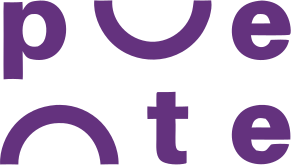
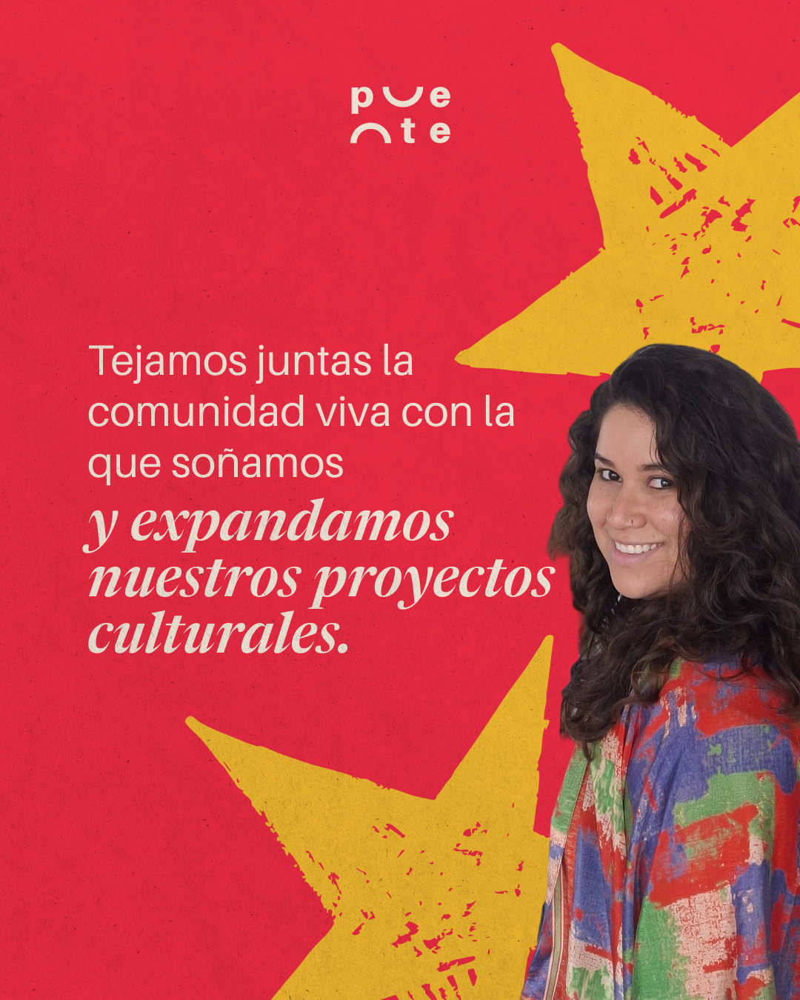
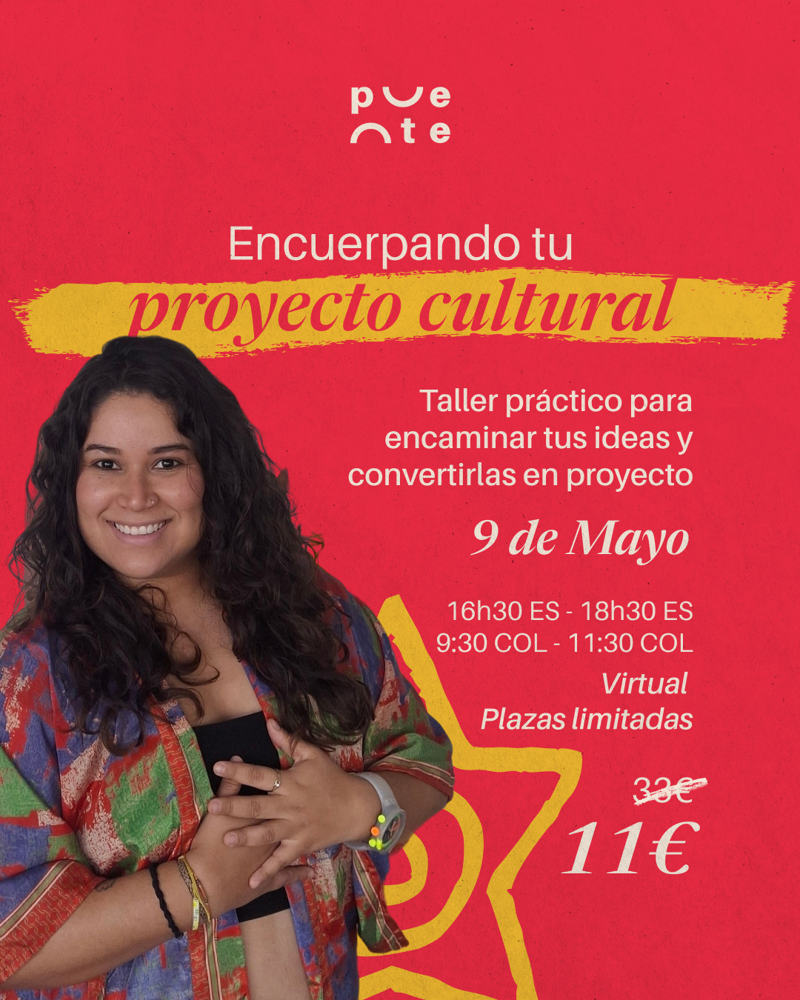
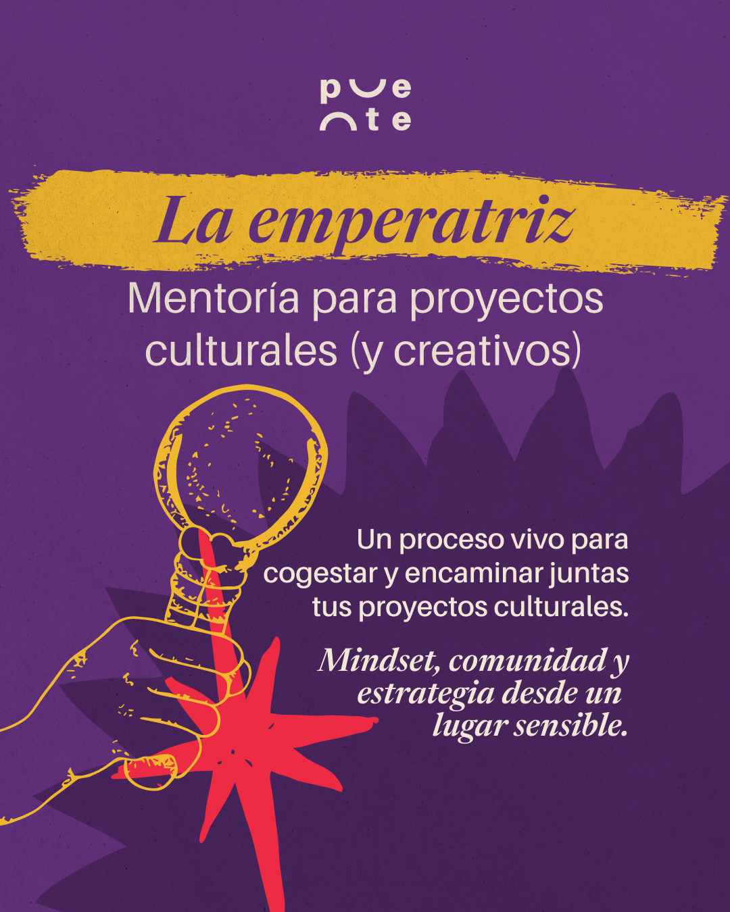
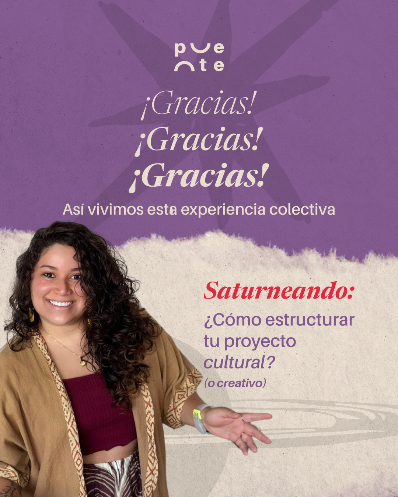

"Reivindicamos la sensibilidad, a través de la diversidad y la soberanía cultural."
Puente acompaña, estudia y cogestiona proyectos culturales y artísticos liderados por creadoras latinoamericanas, mediante mentorías, talleres y consultoría cultural. Su metodología es horizontal y participativa: caminar mano a mano, propiciando espacios de coaprendizaje.
Esta guía traduce esa voz cálida y comprometida en un sistema visual consistente para redes, documentos y comunicaciones.
Paleta de color
Combinaciones habituales: texto Arena sobre Rojo/Morado; texto Tinta sobre Arena/Amarillo. El Amarillo se reserva para acentos — resaltados tipo marcador, iconografía, nunca como fondo de texto extenso.
Tipografía
Serif editorial en cursiva — para frases con carga emocional, citas, nombres de programas ("La emperatriz") y fechas destacadas. Úsese con moderación, en tamaños grandes.
Sans serif de trabajo — titulares informativos, cuerpo de texto, datos (fechas, precios, ubicación). Pesos: regular para párrafos, semibold/bold para énfasis y datos clave.
Logotipo

Símbolo: la "u" forma un puente (⌣) y la "n" un arco (⌢) — la letra dibuja literalmente el vínculo. Úsese siempre en un solo color (blanco o arena) sobre fondos saturados; nunca a color sobre fondos claros sin suficiente contraste.
Elementos gráficos
Recursos de apoyo: estrellas de bordes irregulares (como recortadas a mano), trazos de marcador tipo brochazo para resaltar 2–4 palabras clave, y grano de papel sutil sobre fondos saturados. Ilustración lineal ocasional (ver mentorías) para iconografía conceptual.
Fotografía
Retratos reales de creadoras culturales, luz natural, expresión cálida y cercana. Vestuario colorido y textil (kimonos, estampados) que contrasta con los fondos planos saturados. Las fotos se recortan y sangran sobre el color de fondo — sin marcos ni bordes.



